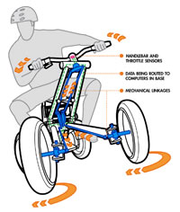

CONCEPT CENTAUR
Like the mythical half-horse, half-man of Greek lore, Concept Centaur combines the best of several technologies to create an innovative whole. The result of exploration by Segway Inc.'s product development team, Concept Centaur will challenge the way you think about four-wheeled transportation.
From time to time Segway's product development team devotes days, or even weeks, to creating new product concepts with the goal of finding a prince among frogs. It's a product exploration process they call "frog kissing." During this time, engineers and designers are encouraged to use any available materials in a very short time frame to prove a concept will work.
The product development team demonstrated that Concept Centaur was a prince—a concept that passed this initial feasibility test, but is not yet ready to become a product. Concept Centaur demonstrates Segway's continued commitment to breakthrough innovation and the innumerable possibilities for the future of personal transportation.
WHAT IS THE CENTAUR?
Concept Centaur combines proprietary dynamic stabilization technology with advanced propulsion and suspension systems, and an intuitive user interface to create a unique four-wheel device that is easily controllable on two or four wheels. Its full suspension and aggressive rider positioning provide an exhilarating ride for one or two people while maintaining control over a variety of terrain. Its rugged performance, zero emissions, and quiet operation make it a good low-impact way to explore the world. Its power and versatility make it suitable for a variety of indoor and outdoor recreational and commercial applications.
Intuitive user controls:
- Thumbs forward: The Centaur's forward and backward propulsion is easily controlled by pushing a thumb throttle located on the underside of the right-hand handlebar.
- Pop a wheelie: The Centaur uses dynamic stabilization technology to limit and/or maintain the angle at which the rider experiences the device. What would normally be a dangerous maneuver on a motorcycle or ATV becomes safe and controlled on the Centaur. In addition, the rider can position his/her body in three different ways, which makes for a fun ride. This technology also allows for a high-performance design with a short, compact wheelbase - a combination that traditionally can be very difficult to control.
- Lean forward, go forward: If you've haven't yet experienced the Segway PT, now is the time. If you have, you know what we mean by intuitive controls. Concept Centaur uses dynamic stabilization in a similar way. When on two wheels, the Centaur is controlled by how the rider shifts his or her weight. To go forward, lean forward. To go back, lean back.
Simultaneous mechanical and drive-by-wire steering:
- Smart steering: The front two wheels turn left and right mechanically, which is made possible by an innovative linkage system designed by Segway engineers. The Centaur's advanced controls software also allows the rear wheels to turn at different rates in response to data received from the rider's steering direction. When on two wheels, steering is accomplished in the same manner, by turning the handlebar. Sensors in the vertical portion of the steering column monitor the rider's input and sends a signal to the controller boards, which then issue a command to drive either or both of the rear wheels. Turning rate is coordinated so that even with the wheels off the ground, Centaur follows the path defined by the front wheel angles. This allows smooth transitions between two-wheel and four-wheel operation.
Environmentally friendly:
- No exhaust: Batteries power the Centaur, so there are no emissions during operation. In addition, the Centaur uses regenerative braking, which means the batteries are recharged during deceleration and hill descents.
- Quiet: Electric motors and an innovative gearbox design result in a quiet ride.
- Low-impact tires: The Centaur prototypes use the same non-marking silica-based tires as the Segway PTs'. These tires are smooth, which allows the rider to perform exciting maneuvers while having little impact on the terrain.
Distinctive design, elegant suspension:
- A profile X-shape: The profile of the Centaur creates an "X." Right after the Centaur was crowned a prince by the engineers, they quickly pulled in Segway's industrial design team to integrate their vision into the product's form and function. What resulted is a concept with a sleek minimalist design that elegantly showcases the rider, leaving the simple mechanical elegance of the underlying design visible.
 Three shocks: There are three shocks on the Centaur that absorb bumps and help the wheels maintain contact with the ground. There is one in each front "arm" and one in the rear.
Three shocks: There are three shocks on the Centaur that absorb bumps and help the wheels maintain contact with the ground. There is one in each front "arm" and one in the rear.- Lightweight: Concept Centaur only weighs about 150 pounds and can be easily transported in the back of a large SUV or small pick-up truck. If developed, its light weight would allow for transport on the back of small cars through a hitch-mounted rack, similar to that used for carrying bicycles.